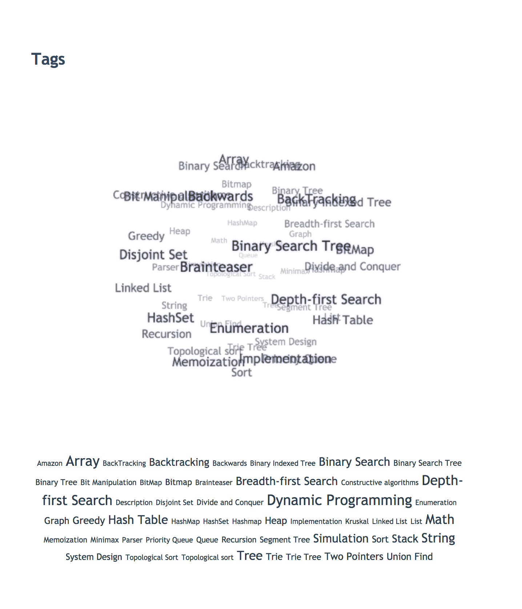

Hexo Tag Cloud


Hexo 标签云插件
效果图

这里是效果预览站点
如何使用
安装
- 进入到 hexo 的根目录，然后在
package.json中添加依赖:"hexo-tag-cloud": "2.1.*" - 然后执行
npm install命令 - 然后需要你去修改主题的 tagcloud 的模板，这个依据你的主题而定。
对于 ejs 的用户
- 这里以默认主题 landscape 为例。
- tagcloud 模板文件为
hexo/themes/landscape/layout/_widget/tagcloud.ejs - 将这个文件修改为如下内容：
1
2
3
4
5
6
7
8
9
10
11
12<% if (site.tags.length) { %>
<script type="text/javascript" charset="utf-8" src="<%- url_for('/js/tagcloud.js') %>"></script>
<script type="text/javascript" charset="utf-8" src="<%- url_for('/js/tagcanvas.js') %>"></script>
<div class="widget-wrap">
<h3 class="widget-title"><%= __('tagcloud') %></h3>
<div id="myCanvasContainer" class="widget tagcloud">
<canvas width="250" height="250" id="resCanvas" style="width=100%">
<%- tagcloud() %>
</canvas>
</div>
</div>
<% } %>
对于 swig 用户
- 这里以 Next 主题为例。
- 找到文件
next/layout/_macro/sidebar.swig, 然后添加如下内容。1
2
3
4
5
6
7
8
9
10
11
12{% if site.tags.length > 1 %}
<script type="text/javascript" charset="utf-8" src="{{ url_for('/js/tagcloud.js') }}"></script>
<script type="text/javascript" charset="utf-8" src="{{ url_for('/js/tagcanvas.js') }}"></script>
<div class="widget-wrap">
<h3 class="widget-title">Tag Cloud</h3>
<div id="myCanvasContainer" class="widget tagcloud">
<canvas width="250" height="250" id="resCanvas" style="width=100%">
{{ list_tags() }}
</canvas>
</div>
</div>
{% endif %}
对于 jade 用户
- 这里以 Apollo 主题为例
- 找到
apollo/layout/archive.jade文件，并且把 container 代码块修改为如下内容:1
2
3
4
5
6
7
8
9
10
11
12
13
14...
block container
include mixins/post
.archive
h2(class='archive-year')= 'Tag Cloud'
script(type='text/javascript', charset='utf-8', src=url_for("/js/tagcloud.js"))
script(type='text/javascript', charset='utf-8', src=url_for("/js/tagcanvas.js"))
#myCanvasContainer.widget.tagcloud(align='center')
canvas#resCanvas(width='500', height='500', style='width=100%')
!=tagcloud()
!=tagcloud()
+postList()
...
最后一步
- 完成安装和显示，可以通过
hexo clean && hexo g && hexo s来进行本地预览, hexo clean 为必须选项。 - PS:不要使用
hexo g -d 或者 hexo d -g这类组合命令。详情见: Issue 7
TODO
看 Todo.md
Troubleshooting
提交 issue 和截图以及 log
自定义
现在 hexo-tag-cloud 插件支持自定义啦。非常简单的步骤就可以改变你的标签云的字体和颜色，还有突出高亮。
- 在你的博客根目录，找到 _config.yml 文件然后添加如下的配置项:
1
2
3
4
5
6
7# hexo-tag-cloud
tag_cloud:
textFont: Trebuchet MS, Helvetica
textColor: '#333'
textHeight: 25
outlineColor: '#E2E1D1'
maxSpeed: 0.5 - 然后使用
hexo c && hexo g && hexo s来享受属于你自己的独一无二的标签云吧。